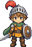
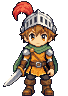
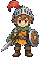

새 walking 전용 템플릿 6프레임입니다. 외형과 모션은 생성 원본 그대로이며, 그림을 흔들거나 좌우 반전해서 움직임을 만들지 않았습니다. 아래 이동 시험은 정면만 지원합니다. 기존 게임은 교체하지 않았습니다.


S / ↓ 또는 아래 버튼을 누르고 있으면 핀이 앞으로 이동합니다. 손을 떼면 대기합니다. 비교 영상과 이동 시험은 독립적으로 동작합니다.
